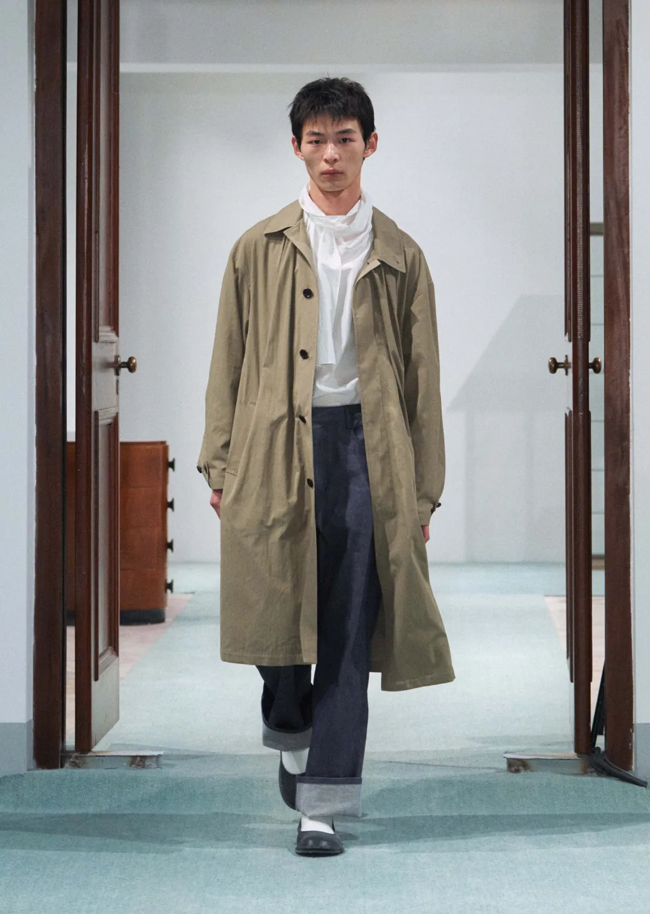
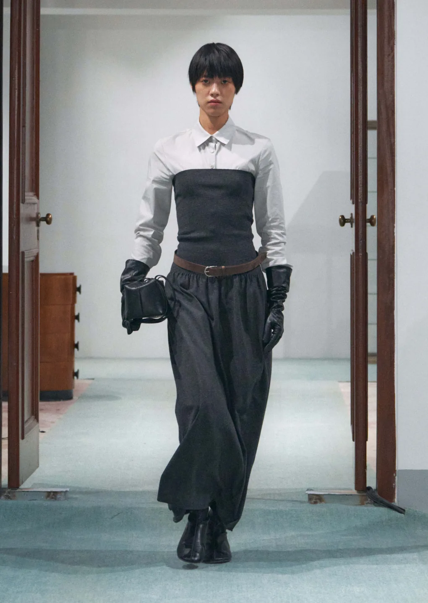
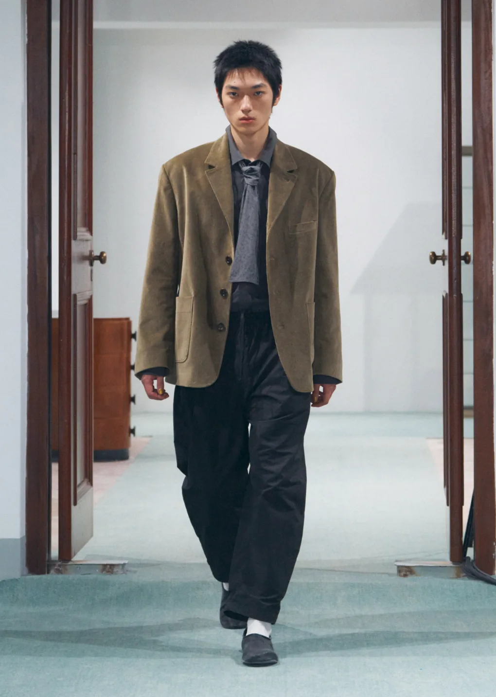

AMOMENTO FW26: The Tailor’s Room

- Brand
- AMOMENTO
- Photography
- Courtesy of AMOMENTO
- Category
- Fashion
- Published
- 1 September 2026
AMOMENTO’s Fall–Winter 2026 collection begins with the yangjangjeom—the Korean tailor’s shop where Western-style clothes were once cut, fitted, and made by hand. Rather than reproduce that history, the collection treats the room itself as a point of departure: a place where imported form met local habit, and where clothing gained meaning through time and attention.
That meeting of traditions gives the collection its tension. Familiar codes of Western tailoring—lapels, ties, belted waists, long coats, pressed shirts—are loosened and reassembled through AMOMENTO’s restrained point of view. The result feels neither nostalgic nor formal. It is tailoring allowed to breathe.


The most lasting clothes hold the memory of how they were made without becoming trapped by the past.
The silhouettes are built through adjustment rather than spectacle. Jackets sit away from the body, trousers gather and fall with generous volume, and shirts are wrapped or extended beyond their expected lines. Even the more recognisable pieces seem to have passed through a second set of hands—cut again for another way of living.
Colour helps keep the construction quiet. Brown, olive, charcoal, grey, and softened white move through the collection like the materials of an old workroom: wood, metal, paper, wool. Against the pale blue floor and dark timber doors of the presentation, each look appears as part of a continuous study rather than an isolated statement.

The collection is most convincing where categories begin to overlap. A hood settles beneath a belted jacket. A narrow bodice compresses a crisp shirt before opening into wide trousers. A tie is softened until it reads almost like a scarf. These gestures make tailoring feel personal—less a uniform imposed on the body than a structure negotiated with it.
AMOMENTO describes the collection as a reflection on the spaces, time, and craftsmanship that once shaped garment making. That intention is visible in its pace. The clothes ask to be considered slowly, through proportion and repetition, rather than understood in a single glance. See the official FW26 collection archive.
For Smaller Hours, this is where the collection resonates most clearly. It does not treat history as decoration. It looks back to recover a way of paying attention: to the cut of a sleeve, the weight of a hem, and the relationship between clothing, maker, and wearer.